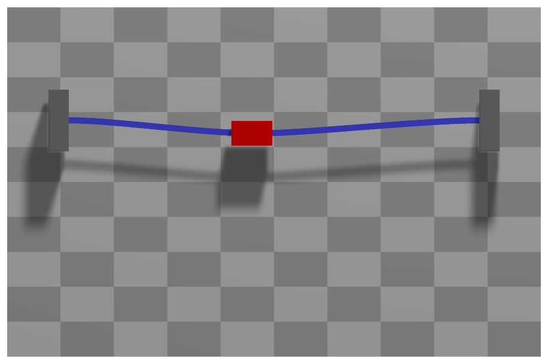

ObjectJointSliding2D
A specialized sliding joint (without rotation) in 2D between a Cable2D (marker1) and a position-based marker (marker0); the data coordinate x[0] provides the current index in slidingMarkerNumbers, and x[1] the local position in the cable element at the beginning of the timestep.


Interface
Python names:
ObjectJointSliding2DorSlidingJoint2D, andVSlidingJoint2Dfor its visualizationNodes it takes: NodeGenericData
Parameters
The parameters of the item; in a dictionary, its type is ‘JointSliding2D’:
name |
type |
size |
default |
description |
|---|---|---|---|---|
name |
String |
‘’ |
constraints’s unique name |
|
markerNumbers |
ArrayMarkerIndex |
[ invalid (-1), invalid (-1) ] |
(symbol: \([m0,m1]\tp\)) marker m0: position or rigid body marker of mass point or rigid body; marker m1: updated marker to Cable2D element, where the sliding joint currently is attached to; must be initialized with an appropriate (global) marker number according to the starting position of the sliding object; this marker changes with time (PostNewtonStep) |
|
slidingMarkerNumbers |
ArrayMarkerIndex |
[] |
(symbol: \([m_{s0}, \ldots, m_{sn}]\tp\)) these markers are used to update marker m1, if the sliding position exceeds the current cable’s range; the markers must be sorted such that marker \(m_{si}\) at x=cable(i).length is equal to marker(i+1) at x=0 of cable(i+1) |
|
slidingMarkerOffsets |
Vector |
[] |
(symbol: \([d_{s0}, \ldots, d_{sn}]\)) this list contains the offsets of every sliding object (given by slidingMarkerNumbers) w.r.t. to the initial position (0): marker m0: offset=0, marker m1: offset=Length(cable0), marker m2: offset=Length(cable0)+Length(cable1), … |
|
nodeNumber |
NodeIndex |
invalid (-1) |
(symbol: \(n_{GD}\)) node number of a NodeGenericData for 1 dataCoordinate showing the according marker number which is currently active and the start-of-step (global) sliding position |
|
useClassicalFormulation |
Bool |
True |
True: uses a formulation with 3 (+1) equations, including the force in sliding direction to be zero; forces in global coordinates, only index 3; False: use local formulation, which only needs 2 (+1) equations and can be used with index 2 formulation |
|
constrainRotation |
Bool |
False |
True: add constraint on rotation of marker m0 relative to slope (if True, marker m0 must be a rigid body marker); False: marker m0 body can rotate freely |
|
axialForce |
Real |
0 |
(symbol: \(f_\mathrm{ax}\)) ONLY APPLIES if useClassicalFormulation==True; axialForce represents an additional sliding force acting between beam and marker m0 body in axial (beam) direction; this force can be used to drive a body on a beam, but can only be changed with user functions. |
|
activeConnector |
Bool |
True |
flag, which determines, if the connector is active; used to deactivate (temporarily) a connector or constraint |
|
visualization |
VObjectJointSliding2D |
parameters for visualization of item |
Renamed parameters, still taken with a DeprecationWarning: classicalFormulation (deprecated since 1.12.258, removed in 2031): use useClassicalFormulation.
Visualization parameters
The parameters of VObjectJointSliding2D, given as visualization:
name |
type |
size |
default |
description |
|---|---|---|---|---|
show |
Bool |
True |
set true, if item is shown in visualization and false if it is not shown |
|
drawSize |
float |
-1. |
drawing size = radius of revolute joint; size == -1.f means that default connector size is used |
|
color |
Float4 |
4 |
[-1.,-1.,-1.,-1.] |
RGBA connector color; if R==-1, use default color |
Drawing
Drawn as all joints; a circle of diameter drawSize at each marker, the one of marker 0 red.
Output variables
Available as OutputVariableType in sensors, Get...Output() and other functions:
output variable |
symbol |
description |
|---|---|---|
Position |
position vector of joint given by marker0 |
|
Velocity |
velocity vector of joint given by marker0 |
|
SlidingCoordinate |
global sliding coordinate along all elements; the maximum sliding coordinate is equivalent to the reference lengths of all sliding elements |
|
Force |
joint force vector (3D) |
|
DisplacementLocal |
\([\Delta\pv\tp\tv,\;\Delta\pv\tp\nv,\;0]\tp\) |
position of the sliding point on the cable relative to marker m0, \(\Delta\pv\), along the unit tangent \(\tv\) and the unit normal \(\nv\) of the cable there: the drift of the joint |
Detailed description
Definition of quantities
intermediate variables |
symbol |
description |
|---|---|---|
data node |
\(\xv=[x_{data0},\,x_{data1}]\tp\) |
coordinates of node with node number \(n_{GD}\) |
data coordinate 0 |
\(x_{data0}\) |
the current index in slidingMarkerNumbers |
data coordinate 1 |
\(x_{data1}\) |
the global sliding coordinate (ranging from 0 to the total length of all sliding elements) at start-of-step - beginning of the timestep |
marker m0 position |
\(\LU{0}{\pv}_{m0}\) |
current global position which is provided by marker m0 |
marker m0 velocity |
\(\LU{0}{\vv}_{m0}\) |
current global velocity which is provided by marker m0 |
marker m0 orientation |
\(\LU{0,m0}{\Rot}\) |
current rotation matrix provided by marker m0 (assumed to be rigid body) |
marker m0 angular velocity |
\(\LU{0}{\tomega}_{m0}\) |
current angular velocity vector provided by marker m0 (assumed to be rigid body) |
cable coordinates |
\(\qv_{ANCF,m1}\) |
current coordiantes of the ANCF cable element with the current marker \(m1\) is referring to |
sliding position |
\(\LUR{0}{\rv}{ANCF} = \Sm(s_{el})\qv_{ANCF,m1}\) |
current global position at the ANCF cable element, evaluated at local sliding position \(s_{el}\) |
sliding position slope |
\(\LURU{0}{\rv}{ANCF}{\prime} = \Sm^\prime(s_{el})\qv_{ANCF,m1} = [r^\prime_0,\,r^\prime_1]\tp\) |
current global slope vector of the ANCF cable element, evaluated at local sliding position \(s_{el}\) |
sliding velocity |
\(\LUR{0}{\vv}{ANCF} = \Sm(s_{el})\dot\qv_{ANCF,m1}\) |
current global velocity at the ANCF cable element, evaluated at local sliding position \(s_{el}\) (\(s_{el}\) not differentiated!!!) |
sliding velocity slope |
\(\LURU{0}{\vv}{ANCF}{\prime} = \Sm^\prime(s_{el})\dot\qv_{ANCF,m1}\) |
current global slope velocity vector of the ANCF cable element, evaluated at local sliding position \(s_{el}\) |
sliding normal vector |
\(\LU{0}{\nv} = [-r^\prime_1,\,r^\prime_0]\) |
2D normal vector computed from slope \(\rv^\prime=\LURU{0}{\rv}{ANCF}{\prime}\) |
sliding normal velocity vector |
\(\LU{0}{\dot\nv} = [-\dot r^\prime_1,\,\dot r^\prime_0]\) |
time derivative of 2D normal vector computed from slope velocity \(\dot \rv^\prime=\LURU{0}{\dot \rv}{ANCF}{\prime}\) |
algebraic coordinates |
\(\zv=[\lambda_0,\,\lambda_1,\, s]\tp\) |
algebraic coordinates composed of Lagrange multipliers \(\lambda_0\) and \(\lambda_1\) (in local cable coordinates: \(\lambda_0\) is in axis direction) and the current sliding coordinate \(s\), which is local in the current cable element. |
local sliding coordinate |
\(s\) |
local incremental sliding coordinate \(s\): the (algebraic) sliding coordinate relative to the start-of-step value. Thus, \(s\) only contains small local increments. |
output variables |
symbol |
formula |
|---|---|---|
Position |
\(\LU{0}{\pv}_{m0}\) |
current global position of position marker \(m0\) |
Velocity |
\(\LU{0}{\vv}_{m0}\) |
current global velocity of position marker \(m0\) |
SlidingCoordinate |
\(s_g = s + x_{data1}\) |
current value of the global sliding coordinate |
Force |
\(\fv\) |
see below |
Geometric relations
Assume we have given the sliding coordinate \(s\) (e.g., as a guess of the Newton method or beginning of the time step). The element sliding coordinate (in the local coordinates of the current sliding element) is computed as
The vector (=difference; error) between the marker \(m0\) and the marker \(m1\) (=\(\rv_{ANCF}\)) positions reads
The vector (=difference; error) between the marker \(m0\) and the marker \(m1\) velocities reads
Connector constraint equations (useClassicalFormulation=True)
The 2D sliding joint is implemented having 3 equations (4 if constrainRotation==True, see below), using the special algebraic coordinates \(\zv\). The algebraic equations read
No index 2 case exists, because no time derivative exists for \(s_{el}\). The jacobian matrices for algebraic and ODE2 coordinates read
if activeConnector = False, the algebraic equations are changed to:
Connector constraint equations (useClassicalFormulation=False)
The 2D sliding joint is implemented having 3 equations (first equation is dummy and could be eliminated; 4 equations if constrainRotation==True, see below), using the special algebraic coordinates \(\zv\). The algebraic equations read
In the index 2 case, the second equation reads
If activeConnector = False, the algebraic equations are changed to:
In case that constrainRotation = True, an additional constraint is added for the relative rotation
between the slope of the cable and the orientation of marker m0 body.
Assuming that the orientation of marker m0 is a 2D matrix (taking only \(x\) and \(y\) coordinates), the constraint reads
The index 2 case follows straightforward to
again assuming, that \(\LU{0}{\tilde \tomega}_{m0}\) is only a \(2 \times 2\) matrix.
Post Newton Step
After the Newton solver has converged, a PostNewtonStep is performed for the element, which updates the marker \(m1\) index if necessary.
Furthermore, it is checked, if \(x_{data0}\) becomes smaller than zero, which raises a warning and keeps \(x_{data0}=0\). The same results if \(x_{data0}\ge sn\), then \(x_{data0} = sn\). Finally, the data coordinate is updated in order to provide the starting value for the next step,
Mini example
from exudyn.beams import GenerateBeamElementsAlongLine
#the coordinates of ANCF cable elements for a sliding joint: a mass point slides along a clamped, stiff cable
cable = ObjectANCFCable2D(massPerLength=1, bendingStiffness=1e4, axialStiffness=1e6)
beamInfo = GenerateBeamElementsAlongLine(mbs, positionStart=[0,0,0], positionEnd=[2,0,0],
numberOfElements=4, beamTemplate=cable,
groundConstraintsStart=[1,1,1,1], groundConstraintsEnd=[1,1,1,1])
nodes, elements = beamInfo['nodes'], beamInfo['elements']
nMass = mbs.AddNode(NodePoint2D(referenceCoordinates=[0.6,0]))
mbs.AddObject(ObjectMassPoint2D(nodeNumber=nMass, mass=1))
mMass = mbs.AddMarker(MarkerNodePosition(nodeNumber=nMass))
mbs.AddLoad(LoadForceVector(markerNumber=mMass, loadVector=[1,0,0]))
cableMarkers = [mbs.AddMarker(MarkerBodyCable2DCoordinates(bodyNumber=e)) for e in elements]
offsets = [0.5*i for i in range(4)] #the element length is 0.5
nData = mbs.AddNode(NodeGenericData(numberOfDataCoordinates=2, initialCoordinates=[1, 0.6])) #element 1, sliding coordinate
mbs.AddObject(ObjectJointSliding2D(markerNumbers=[mMass, cableMarkers[1]], slidingMarkerNumbers=cableMarkers,
slidingMarkerOffsets=offsets, nodeNumber=nData))
mbs.Assemble()
mbs.SolveDynamic()
#the mass slides: x = 0.6 + F/(2m)*t^2 at t=1, the stiff cable deflects little
exu.sys['testResult'] = mbs.GetNodeOutput(nMass, exu.OutputVariableType.Position)[0] #1.1
Relevant Examples (Ex) and TestModels (TM) with weblink to github: ANCFmovingRigidbody.py (Ex), ANCFslidingJoint2D.py (Ex), ANCFslidingJoint2Drigid.py (Ex), ANCFswitchingSlidingJoint2D.py (Ex), SlidingJoint2DTest.py (TM)